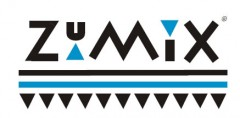

Zumix

Website:
http://zumix.org Location:
East Boston, MA
Empowered youth who use music to make strong positive change in themselves, their communities and the world. Over the last 15 years, ZUMIX programs have addressed the cultural and social needs of East Boston through music and radio training programs, including songwriting, music technology, instrumental, theory, Dj hosting and journalism. We have an active community arts program that provides free concerts and have developed a number of music ensembles that perform throughout the city. ZUMIX-trained youth provide year-round technical staffing for City musical events. There are no radio or television outlets that specifically serve East and few newspapers. Our radio station is a focus for discussing political and cultural issues, as well as a venue for artists who are under-represented on mainstream radio.
Project Description:
Zumix has begun re-construction of a firehouse nearby and is scheduled to begin moving its operations in Fall, 2009. The space is 3 times our current space and, as a result, we expect to serve considerably more people. There are many organizational challenges that arise as a result of this expansion.
One such challenge is the need to create an organizing structure capable of soliciting, organizing and supporting the large number of interns and volunteers who will be needed to support our growth. It is our hope that VISTA will be suffiently organized to be able to define the parameters of this process so that a new person will need only a minimum of training in order to continue the process of volunteer and intern oversight. VISTA will survey the history of interns and volunteers at Zumix and generate a Best Practices document. The results of this document should be able to be implemented on a year-by-year basis by the Assistant to the Director (currently Monica Soto-Gil).
Much of the work of the VISTA will be to undertake the organization of several tasks in conjunction with Zumix youth, prepare documentation on implementing these tasks and collaborate on creating youth job descriptions.
One task is ensuring that the community and Zumix attendees are made aware of our process so that there is continuity from our old building to the new. Part of this will entail more frequent on-line updating and more direct interface with the community. Our current VISTA has begun this by increasing our web presence, especially that of our radio station. This includes our journalism blog- zumixradio.blogspot.com. A new Vista would continue to upgrade and expand our web site and would work to strengthen station ties with other youth media organizations across the country by making sure that information and programs are shared across this network. Zumix has hired a part-time web supervisor, part of whose job is to make the web site more accessible to Zumix staff. VISTA would work as a bridge between that person and a youth, who would be taking responsibility for the radio aspect of the website on a 6-month rotating basis.
Our current VISTA has also worked to produce radio underwriting material, the purpose of which is to help increase Zumix and Zumix Radio’s profile to local businesses who might be willing to financially support the station, to display our advertising and to turn the station on in their place of business. A VISTA would solicit, organize and supervise youth volunteers to undertake this outreach. The, he or she would collate the results and prepare documentation that would be made available to other small radio stations across the country, interested in finding an efficient underwriting approach.
This VISTA would be involved in generating publicity material that can better alert the community about our updated operations and broadcast schedule and generally helping intensify the level of cooperation between the station and local non-profits. She will help create a web of people at these non-profits who will continue to feed public service announcements to the station and advise on topics and guests suitable for the station. The goal would be to establish a network that can be kept intact by the station Coordinator.
Finally, we have the financial challenge of increasing capacity. Zumix has been engaged in a building fundraising campaign for several years, a campaign which-especially in light of the current economy-has been successful. However, there continue to be needs that have not yet been met, especially concerning infrastructure for the new building. VISTA will be asked to help support fundraising efforts by helping to develop a fee-for-service plan for Zumix that would be considered for implementation over the next 3-5 years.
Project Tangibles:
Generated outreach and underwriting materials will be made available to other organizations through our web site.
In addition to these, other materials will be generated, including the public service announcements for non-profits, underwriting announcements for local businesses and a bigger in-flow of guests into the station would all be tangible products.
Additionally, there are aspects of our radio program that I would like to share with other youth media operations across the country. As part of that, I will present at the next "Media Matters," sponsored by the Boston Globe and UMass Boston and invite the VISTA to participate.
Supported Projects
Website and Social Media Development
Sharon Small
7/2009 — 7/2010
VISTA would have to analyze the current use of volunteers, interns and staff and create documentation that describes what Zumix will need to move into its new, larger space at the firehouse. VISTA will explore local businesses and non-profits and create relationships that will benefit the radio station, either by bringing in underwriting or creating new opportunities for program content. VISTA may be be asked to help in various fundraising efforts, like the Walk for Music and help develop a fee-for-service plan. He or she may be asked to help design, administer and collate program evaluations or be involved in other organizational outreach and development. VISTA will create documentation so that youth, in conjunction with Zumix staff, will be able to continue work that has begun.
Goal 1: Solicit 5 underwriters for Zumix Radio
Goal 2: Create a plan for the mainstreaming of Interns and volunteers at the Firehuose.
Sharon was responsible for expanding our use of social media and for upgrading the website. She assisted with the implementation of radio schedules and class curriculum. She was part of the team that coordinated live broadcasts and ran her own radio show.
Our ability to use social media in basically now in place, as is the process for website updating. The radio curriculum has been further refined.
Radio Program Outreach
Megan Donovan
7/2008 — 7/2009
Zumix is a non-profit serving the community with after-school programs, including instrumental and vocal music, songwriting, audio technology, audio editing, musical groups, other arts-related activities and a low-power radio station.
The position will be specifically radio-related. This person will assist in training volunteers for the radio, preparing youth to assume positions of responsibility at the station. She or he will assist in raising the profile of the station in the community and facilitating a more intense relationship between the station and businesses, non-profits and other community members and organizations. She will also help to elevate the level of journalism being produced by our youth news staff.
Megan was an important part of the training aspect of the station, both for on-air DJ’s and the journalism group. She participated fully in the classes and helped in preparation. She built relationships with the youth, helping them do the best possible jobs in their shows and working with them as they produced journalism for our blog. She was specifically in charge on a class on interviewing techniques. She also helped set up field trips and accompanied students on those trips. She helped make sure that assessments and evaluations properly conducted. She ran her own radio program, modeling the way radio should be done. This work was all conducted under the supervision of the station coordinator, Steve Provizer, who also worked with Megan to write and design underwriting materials which we are now using to connect with local East Boston businesses. She was often called upon to help publicize the work of the station and Zumix in general, by preparing publicity material and helping to organize mailings. Megan was a full participant in staff meetings and helped determine organizational policies.
As previously stated, we are extending Megan’s work on underwriting. The database work she did in the course of helping with publicity have served Zumix well. Also, she prepared documents with procedures, passwords, etc., that have helped make the transition to our new VISTA very smooth.
Radio Program Coordinator
Diana Boro
6/2007 — 6/2008
Zumix isa non-profit serving the community with after-school programs, including instrumental and vocal music, songwriting, audio technology, audio editing, musical groups, other arts-related activities and a low-power radio station.
Our VISTA’s will be specifically radio-related. That person will assist in training volunteers for the radio, preparing youth to assume positions of responsibility at the station-including training new station volunteers themselves. He or she will also help to prepare technical infrastructure for the new firehouse facility that Zumix will move into during summer ‘07.
There were many areas of Zumix Radio and Zumix in general to which Diana contributed. She helped prepare youth for radio work, including going on the air and journalism. She helped prepare Zumix journalists for pieces that have been posted on our blog: zumixradio.blogspot.com. She helped develop underwriting material and other publicity material. She was a full participant in staff meetings and helped contribute to staff trainings and retreats. She assisted with Zumix events such as the Walk For Music. and with gathering information necessary for grantors.
Simply extrapolate from the above, as Diana was successful at all work undertaken. She became a valued member of the Zumix community, including learning how to play the bass and participating in Zumix recitals.
With regard to challenges faced, Diana initially had little radio experience and needed to acquire some quickly, which she did.
Youth and Volunteer Outreach and Training
Samuel Russell
6/2005 — 6/2006
The VISTA will assist in training volunteers for the radio, preparing youth to assume positions of responsibility at the station-including training new station volunteers themselves. He or she will also help to prepare technical infrastructure for the new firehouse facility that Zumix will move into during summer ‘07.
Since Sam’s arrival, we have put a radio station on the air and are also streaming on the internet. We have undergone several rounds of training, preparing youth and adults to participate as music hosts and news reporters for the station. Sam has been involved in all phases of this process, helping to build the infrastructure, train radio staff and conduct outreach.
Sam also assumed partial responsibility for starting “The VIllage,” a weekly meeting of youth and staff that allowed for wide-ranging discussions of issues important to the Zumix community, Also, he was the key link between Zumix and the B.U. School of Digital Imaging, which resulted in a video documentary on Zumix. This video has already proven to be an effective outreach and fundraising tool for our organization.
Related Content
None created yet!